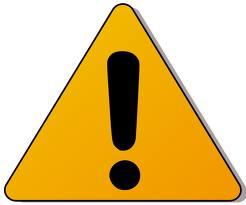

What You Should Know - Pixie: Design a Home State Reference Map
 Important Vocabulary
Important Vocabulary
- Customary System - a measurement system used in the United States that includes measurements such as miles, feet, inches, tons, pounds, and ounces
- Metric System - a measurement system used around the world based on units of ten that includes measurements such as meters, centimeters, grams, and milligrams
- Conversion Factor - a multiplier that can be used to convert one unit of measure to another
- Conversion Table - a tool for converting between units that lists values as number pairs
- Equivalent - different ways of naming the same amount
Pictures Tell a Story
Have you heard the expression, “a picture is worth a thousand words?" It means that pictures often communicate ideas better than words alone.
Let us say an ice cream shop wanted to interest you in a delicious ice cream brownie sundae.
Do you think it would be better to list all the ingredients, explain how it is made, and tell you about the taste?…or just show you a picture?
It is best to communicate in ways that make the most sense for your message (what you want to say) and your audience (who you want to speak to).
What Do Signs Mean?
Why do you think signs communicate messages with pictures, instead of words?
Using pictures is a great way to communicate ideas, and using pictures with words can be, even, be better.
Here are ways to show your work:
- Take pictures or screenshots of your project.
- Add labels to help someone understand the picture.
- Add text to help explain the picture and labels in more detail.
 |
 |
 |
Common Conversions
You will dig a little deeper into at least the interesting facts about your state in order to include information that has to do with measurement. For example, how tall is the giant tree? How old are the covered wagon tracks? Or how much does the giant dinosaur model weigh? You will convert the measurements into different units and then decide which one to put on your state map. Would you rather tell people a canyon is 3000 feet deep or 36,000 inches deep? Why?
Most measurements in the United States are given using the customary system. America's customary system grew from the inherited British measurement system. Although there have been efforts throughout our history to move to the metric system, they have proven to be unsuccessful due to costs and a resistance to change.
You can also choose to use metric measurements on this project. Since the metric system is a base ten system, some find the conversions between units more logical, and easier to understand and remember.

How to Convert
You will be converting from smaller to larger units, so you will use multiplication to find the new units. First, you will find your conversion factor from the tables. For example, 1 foot = 12 inches. Then, to convert a measurement from feet to inches, you will multiply the number of feet by 12.
Practice converting a simple measurement such as 4 feet into inches or 2 hours into minutes.
Career Connection and Real-World Application
Unit Conversions in Careers
Unit conversions are used by may professionals including architects and chefs. Architects draw plans of their projects that are not to actual size. They use conversion factors so that the drawing and the actual project will look the same. Chefs use conversion factors to adjust recipes for a greater number of people or to make more servings than a recipe calls for.